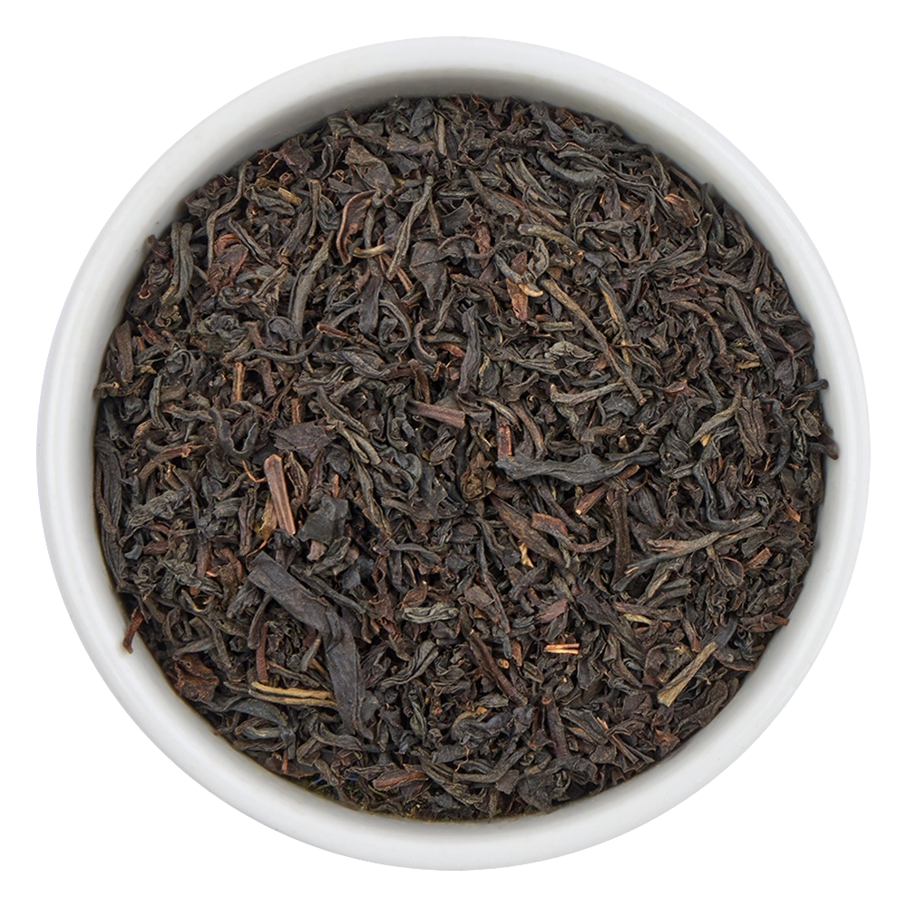
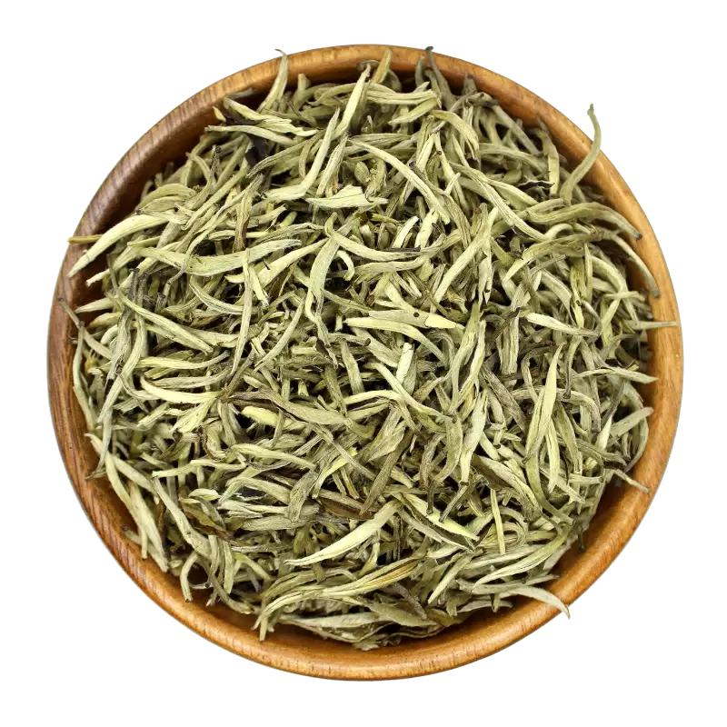
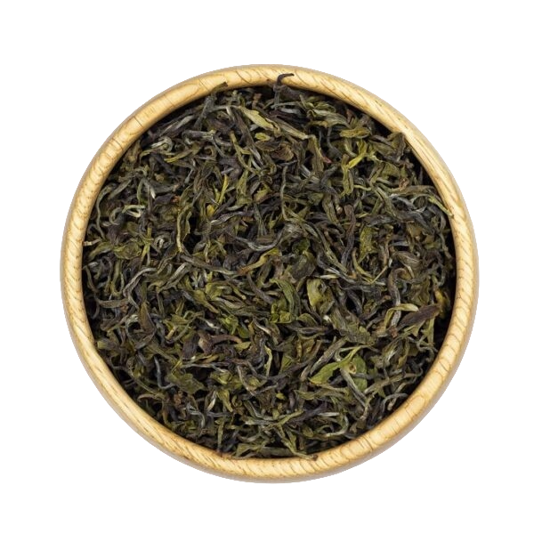
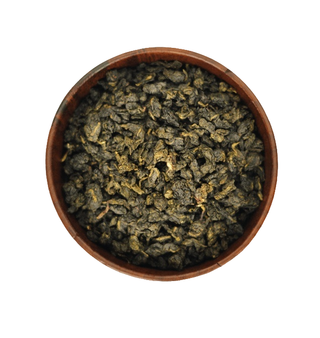

Крепкий, полностью ферментированный напиток из листьев чайного куста (Camellia sinensis) с глубоким, терпким вкусом и тёмным настоем

Элитный китайский чай с минимальной обработкой, который делают из самых молодых почек и нежных листочков, покрытых белым пушком

Полезный напиток из листьев чайного куста, которые проходят минимальную ферментацию (окисление)

Традиционный китайский чай, который занимает промежуточное положение между зеленым и черным чаем